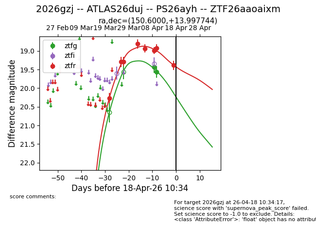
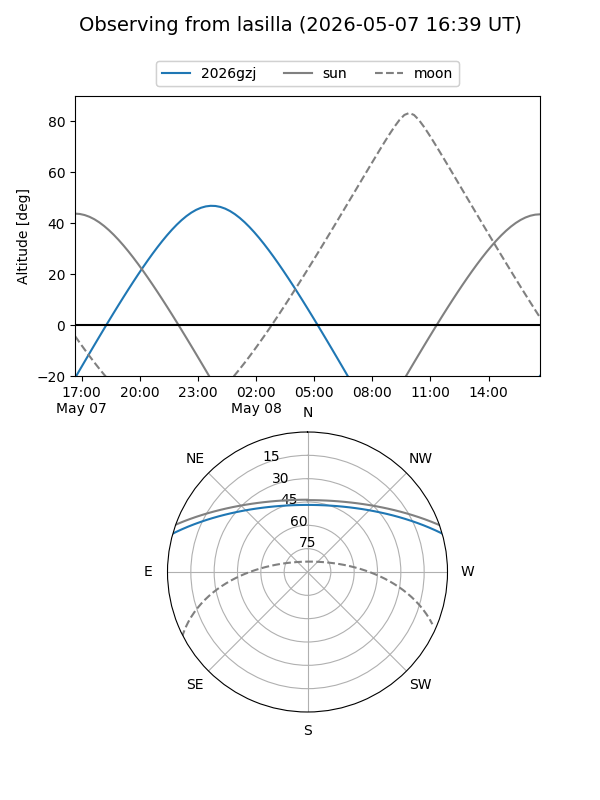
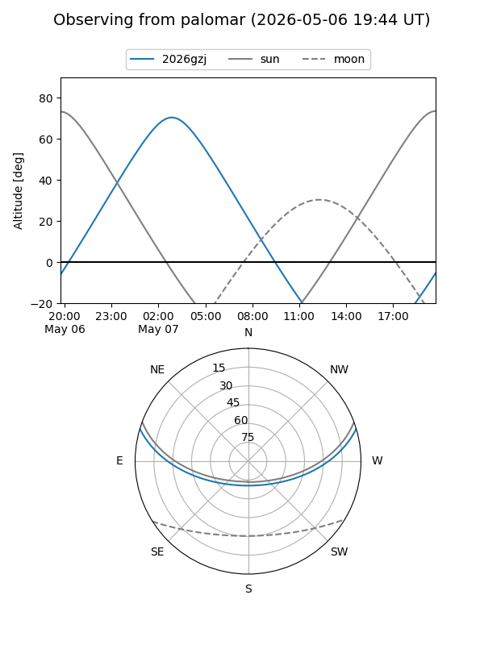
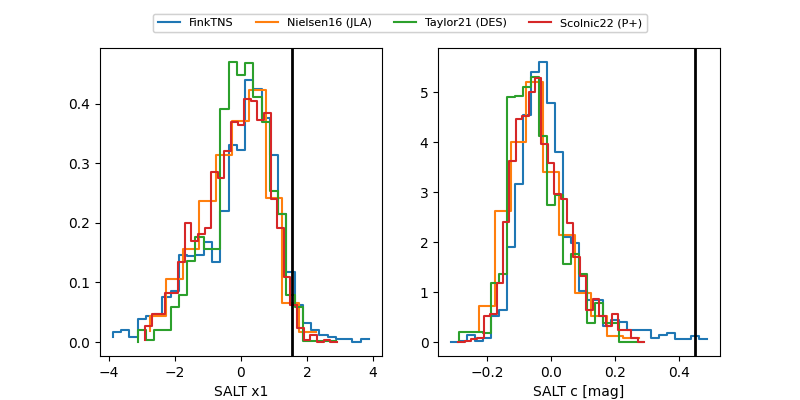

2026gzj
Target 2026gzj at 2026-04-18 10:38
Aliases and brokers:
FINK: link
Lasair: link
ALeRCE: link
TNS: link
YSE: link
alt names
ZTF26aaoaixm (ztf,fink_ztf)
2026gzj (tns,yse)
ATLAS26duj (atlas)
PS26ayh (panstarrs)
Coordinates:
equatorial (ra, dec) = 150.6000,+13.99774
equatorial (HMS+DMS) = 10:02:23.99,+13:59:51.88
galactic (l, b) = (222.6869,+48.54028)
Flags:
Photometry:
last ztfg=19.56, ztfr=19.39
2 ztfg, 8 ztfr detections
Lightcurve

Visibility


Additional plots
